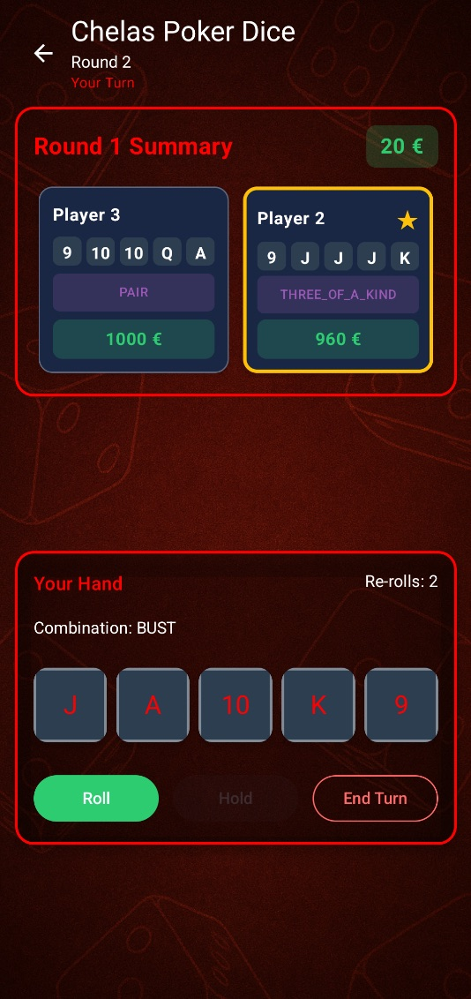
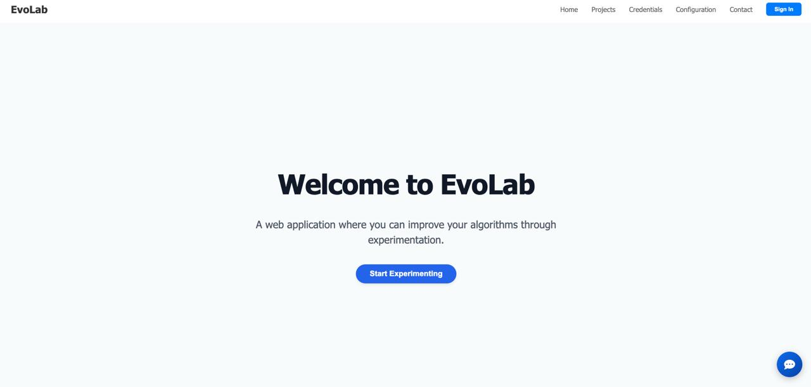
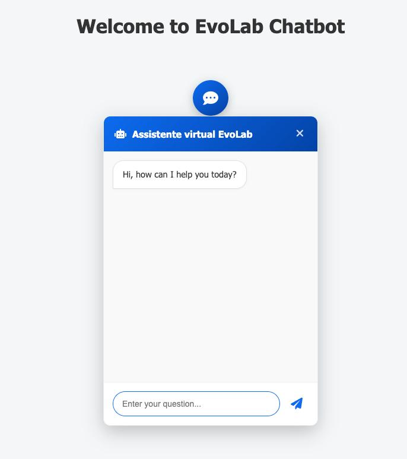
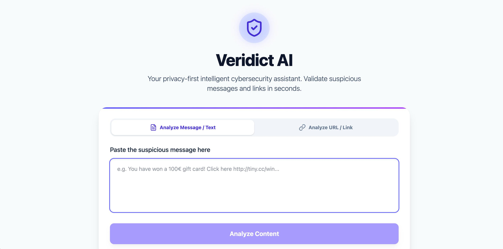
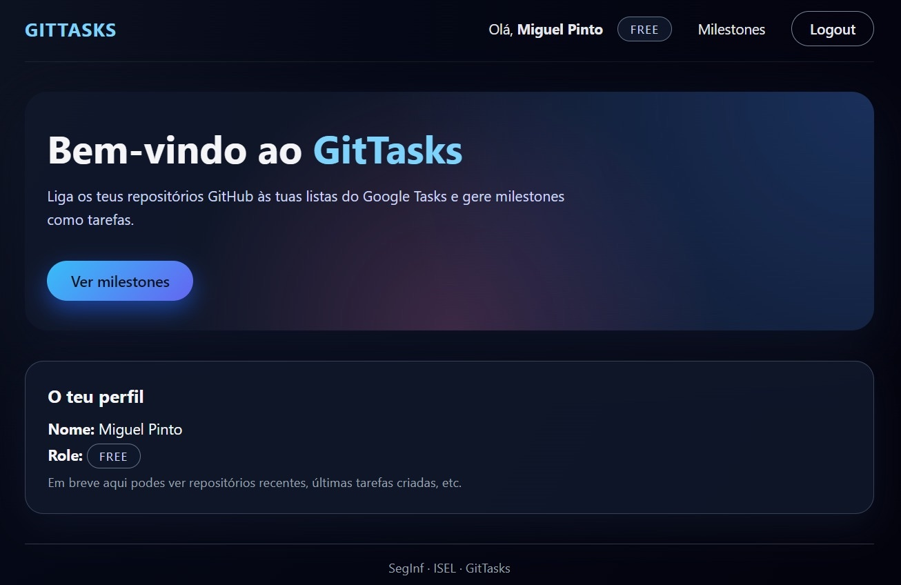

Paddle Courts Manager
Layered architecture with full CRUD, booking system and responsive JS frontend.
Computer Engineering Student
Fullstack-focused developer passionate about algorithms, system design and building real-world software — from Spring Boot backends to Android apps with Jetpack Compose.
I'm a Computer Engineering student who enjoys turning ideas into working software. I focus mainly on full-stack development, but I'm equally interested in algorithms, system design, and understanding how things work under the hood.
I like building projects that solve real problems and help me grow as a developer — from backend REST APIs to native Android apps.
Backend APIs, frontends and databases — end to end.
Android apps with Jetpack Compose and Kotlin.
Assembly, C and FPGA/VHDL hardware integrations.
Docker, Nginx, Render deployments.
A snapshot of the technologies I use frequently.
My most complete project: a full-stack web app + native Android app.

A full-stack multiplayer web game built with a Spring Boot (MVC) backend exposing a REST API, and a React frontend with real-time state management. Containerized with Docker and served through Nginx.

Native Android app for the same game using Jetpack Compose for a modern declarative UI, fully written in Kotlin. Features multiplayer sessions and smooth game flow.
Larger builds that combine backend, frontend, AI, security, infrastructure and product thinking.

One of my largest projects: a platform for managing experimental projects with a Spring Boot + Kotlin backend and a React + TypeScript frontend. It connects authentication, job orchestration, Docker execution, AI validation, and chatbot support.
The backend includes a pool of workers that consume experimental projects from a Channel, launch OpenEvolve containers using the docker-java library, and persist job state in the database.

RAG-powered virtual assistant for EvoLab, built with Python, FastAPI, LangChain, and ChromaDB.
The frontend is a lightweight JavaScript IIFE that builds the chatbot UI and sends requests to the FastAPI service, making integration into EvoLab simple.

Cybersecurity-focused prototype for detecting malicious links and suspicious phishing attempts, combining analysis workflows with AI-assisted threat evaluation.
The rest of my completed work, organized so the portfolio is easier to scan.
Applications that connect APIs, persistence, and practical frontend workflows.
Layered architecture with full CRUD, booking system and responsive JS frontend.

Backend service integrating a football API with frontend search and data visualization.
Game projects focused on state, UI rendering, persistence, and hardware/software interaction.

Immutable-state Reversi in Kotlin with Jetpack Compose UI and MongoDB persistence.

Recreation of the classic Snake game in Kotlin using the Canvas API for rendering.

Hardware/software split: Kotlin for game logic plus VHDL on FPGA for keypad and display I/O.
Work around identity flows, OAuth, OpenID and GitHub-backed task management.

JavaScript web app for managing project tasks with Git integration using OpenID and OAuth 2.0.